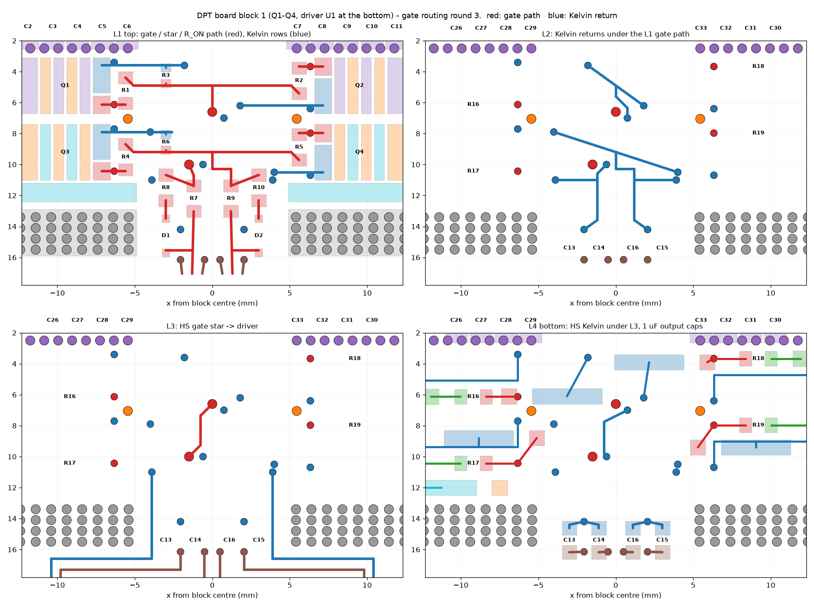

Higher voltage helps charging, cables and the machine. The cost lands on the semiconductors: higher blocking voltage, higher switching loss and more insulation stress.
Charging: current and cable loss
- Same energy at 1200 V instead of 800 V: about 33 % less current and 56 % less I²R loss in the charging cable.
- Or keep the loss and cut the copper: about 40–45 % less cable mass.
- Megawatt charging (MCS) allows up to 1250 V, so a 1.2 kV battery can use it fully.
I²R scaling for equal power and the same conductor. The 800 V reference is fixed.

Test method for both prototypes: two inverters back to back on one 1.2 kV supply. The supply only covers the losses, which are measured from the coolant temperature rise and flow (calorimetry) and then separated into conduction and switching loss.
| 800 V vs 1200 V, same power and thermal limits | Result |
|---|---|
| Charging current | −33 % |
| Charging-cable I²R loss | −56 % |
| Inverter efficiency (1.2 kV SiC vs 2 kV SiC) | ≈ 99.2 % both |
| DC-link capacitor volume | 3.5 → 3.0 L |
| Inverter power density | 50.0 → 55.5 kW/L (+11 %) |
| Motor: series instead of parallel winding paths | same geometry |
Ayaz et al., 1.2 kV DC-link study for heavy-duty EVs (IEEE Access, accepted); HEMIZERO meeting, Oct 2026.



Double-pulse circuit. One leg: 4 × EPC2361 per switch, 2 drivers, a shunt in every cell, 1200 V isolation to the control side, 89.5 × 85.2 mm, 4 layers. in progress
Load circuit. The same leg with a heatsink over the transistors, for continuous operation at rated current. after double pulse
Gate drive. One driver channel per pair, gate in a star, Kelvin return under each gate trace, so every transistor sees the same gate loop.